5.5. Advanced topics
5.5.5. How do you optimize a process?
5.5.5.1. Single response case
5.5.5.1.3. |
Single response: Choosing the step length |
An example
 in
in 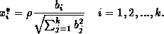
. However, the procedure below considers the original units of measurement which are easier to deal with than the coded "distance'' .
.
Procedure: selection of step length.
-
Choose a step length
 (in natural units of measurement) for some factor j. Usually, factor
j
is chosen to be the one engineers feel more comfortable varying, or the
one with the largest
(in natural units of measurement) for some factor j. Usually, factor
j
is chosen to be the one engineers feel more comfortable varying, or the
one with the largest 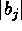
. The value of can be
based on the width of the confidence cone around the steepest ascent/descent
direction . Very wide cones indicate that the estimated steepest ascent/descent
direction is not reliable, and thus
can be
based on the width of the confidence cone around the steepest ascent/descent
direction . Very wide cones indicate that the estimated steepest ascent/descent
direction is not reliable, and thus 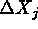
should be small. This usually occurs when the R2 value is low. In such case, prior to moving from the current experimental region, additional experiments can be conducted to obtain a better model fit and a better search direction. -
Transform to coded units:
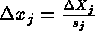
where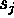
is the scale factor used for factor j (e.g.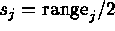
). -
Set
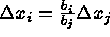
for all other factors i. -
Transform all the
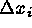
's to natural units: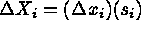
.
-
For the chemical process experiment described previously,
the process engineer selected
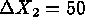
minutes. This was based on process engineering considerations. It was also felt that does not
move the process too far away from the current region of experimentation.
This was desired since the R2 value of 0.6580 for the fitted
model is quite low, providing a not very reliable steepest ascent direction
(and a wide confidence cone, see Technical
Appendix 5B).
does not
move the process too far away from the current region of experimentation.
This was desired since the R2 value of 0.6580 for the fitted
model is quite low, providing a not very reliable steepest ascent direction
(and a wide confidence cone, see Technical
Appendix 5B).
-
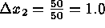
. -
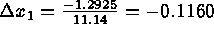
. -
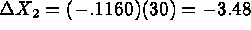
 C
.
C
.
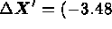
Procedure: Conducting Experiments Along the Direction of Maximum Improvement.
-
Given current operating conditions
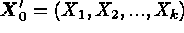
and a step size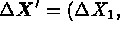
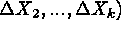
, perform experiments at factor levels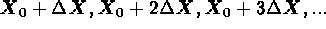
as long as improvement in the response Y (decrease or increase, as desired) is observed. -
Once a point has been reached where there is no further improvement, a
new first order experiment (e.g. a
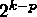
fractional factorial) should be performed with repeated center runs to assess lack of fit. If there is no significant evidence of lack of fit, the new first order model will provide a new search direction, and another iteration is performed as indicated in Figure 5.3. Otherwise (there is evidence of lack of fit) the experimental design is augmented and a 2nd order model should be fitted. That is, the experimenter should proceed to "Phase II".
Step 1:
Given
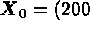
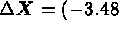
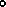
C for practical reasons):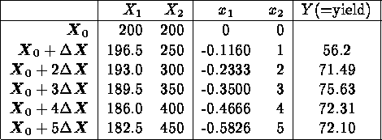
Since the goal is to maximize Y, the point of maximum observed response is
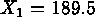
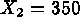
minutes. Notice that the search was stopped after 2 consecutive drops in response, to assure we have passed by the "peak'' of the "hill''.Step 2:
A new
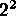
factorial experiment is performed with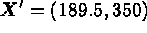
as the origin. Using the same scaling factors as before, the new scaled controllable factors are: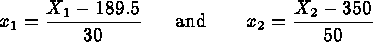
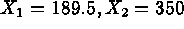
) were repeated to assess lack of fit. The experimental results were: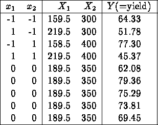
The corresponding ANOVA table for a linear model, obtained using the DESIGN EASE statistical software, is
SUM OF MEAN F SOURCE SQUARES DF SQUARE VALUE PROB > F MODEL 505.300 2 252.650 4.731 0.0703 CURVATURE 336.309 1 336.309 6.297 0.0539 RESIDUAL 267.036 5 53.407 LACK OF FIT 93.857 1 93.857 2.168 0.2149 PURE ERROR 173.179 4 43.295 COR TOTAL 1108.646 8From the table, the linear effects (model) are significant and there is no evidence of lack of fit. However, there is a significant curvature effect (at the 5.4% significance level), which implies that the optimization should proceed with Phase II, that is, the fit and optimization of a second order model.